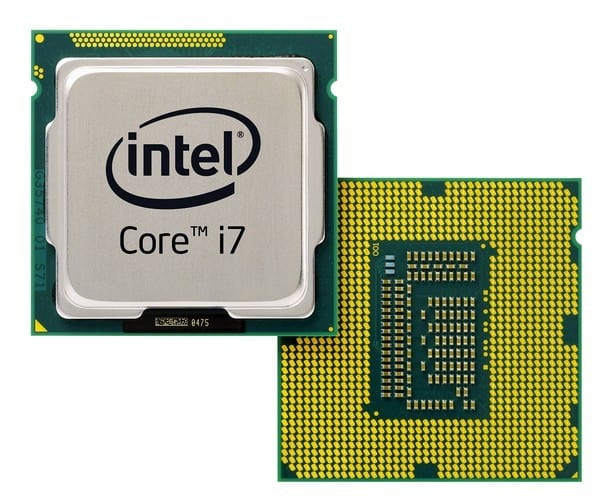

Существует два вида процессоров:
Настольные – модели, предназначенные исключительно для домашнего использования. Их характеристики позволяют работать в режиме многопоточности и многозадачности на бытовом уровне (запуск нескольких программ, работа с браузерами, перемещение данных, запись информации на диск/flash-накопитель, игры, рендеринг, обработка фото и видео).
Отличаются относительно небольшим количеством ядер, высокой частотой, небольшим тепловыделением (35–95 Вт) и невысокой стоимостью.
Серверные – зачастую используются в терминалах для управления огромными массивами информации. Также они способны работать параллельно с несколькими подключенными клиентами, если на сервер установлена профильная ОС и используется соответствующее ПО.
Данный центральный процессор изначально рассчитан на работу в режиме 24/7 на протяжении 5 лет в условиях высоких температур, постоянной нагрузки и не только.
От настольных отличаются куда большим числом ядер (но с низкой частотой), очень высоким объемом кеш-памяти, поддержкой регистровой оперативной памяти до 1–2 ТБ (дополнительная проверка данных на целостность и коррекция ошибок на лету).
По внешнему виду так сразу и не отличишь(в некоторых случаях), какой процессор представляет серверный и настольный сегмент. Здесь уже нужны базовые знания в плане маркировки серий.
| Intel | Amd | ||
|---|---|---|---|
| Настольные | Серверные | Настольные | Серверные |
| Atom (D) | Atom (C, E, S) | Athlon | Opteron |
| Celeron | Xeon | A‑Series | Epyc |
| Pentium | Xeon Phi | Ryzen | |
| Core | Itanium |